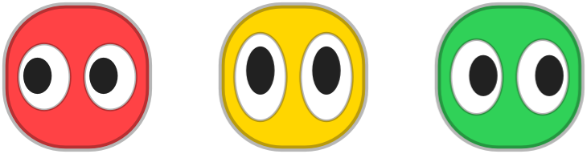
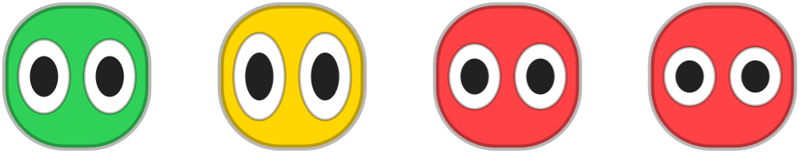

Claude Traffic Light
scrollsmall, but it notices
instant alertsa sound and a banner the moment a session is blocked or done, so you can walk away from long tasks.
api-gatewayneeds you
webworking
click to focuspick a session and jump straight to its terminal. named by project folder.
3ms
instanta file watcher, not polling.
+4
any number of shellssix dots, then the rest fold into a +N.
alert when a turn finishes
every alert is its own switchpermission prompts, finished turns, and a volume slider to keep it subtle.
200kb
one native binaryno runtime dependencies. the hooks are plain bash and jq.

reads claude code directlystate comes from claude code's own hooks. nothing to configure.
he has moods
the body takes the colour most of your shells are in. the mood is all in the eyes, which squish to show how things are going.

chillround and calm, everything quiet- alertpopped tall, a session needs you
- under pressurenarrowed, a few sessions working
- stressedsquished flat, everything running at once
red, yellow, green, repeat
each claude code hook writes one tiny file per session. the app watches that folder and draws the most urgent state. plain shells, editors and ssh never fire a hook, so only claude code shows up.
stop checking tabs
on first launch it wires up its claude code hooks, backing up your settings first. restart any open sessions and the bot is watching.
zsh
~ % brew install --cask mitchelmckee/tap/claude-traffic-light ==> Installing dependencies: jq ==> claude-traffic-light was successfully installed! ~ % open -a ClaudeTrafficLight